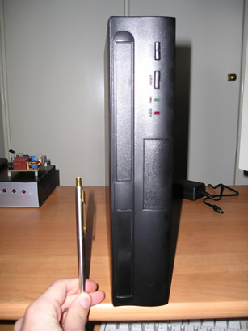

| This mini-ITX PC is a complete PC used mainly
for embedded systems, network firewalls or standalone servers.
Its VIA CPU is running at about 500MHz (these frequencies
have no meaning anymore - it's much faster than Pentium 733).
Its motherboard is extremely small (17cm x 17 cm) and has
everything on it; VIA sound card, Trident graphics card, many
USB slots, TV out and S-Video, Ethernet controller and takes
up to four IDE devices (Hard disks or CD-ROMs).
In addition this device is COMPLETELY FANLESS. This means
that you can let it work all day and night without noise disruption.
- It can run SuSE Linux (8.1, 9.1, 9.2 tested).
- I use it without monitor, keyboard or mouse via network
with a SSH terminal.
- It's cool, inexpensive and easy to use. Excellent choice!!
|
 |